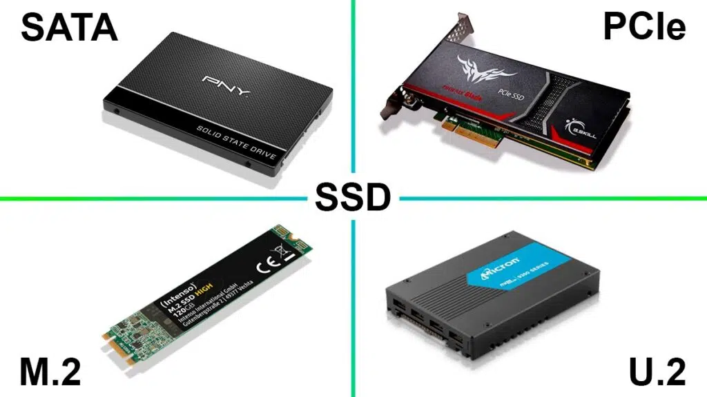

Celdas de Memoria Flash: La unidad SSD utiliza celdas de memoria flash para almacenar datos de manera no volátil.
Lectura y Escritura: Se envían pulsos eléctricos a las celdas para leer y escribir datos, interpretando la resistencia eléctrica para determinar el estado de cada celda.
Controlador: Gestiona el acceso a las celdas de memoria, controla la lectura y escritura de datos, y asegura una distribución equitativa del desgaste. Contiene el direccionamiento, el bus de datos y el control para administrar uno o más componentes Flash.
Tipos de Memoria Flash: Principalmente, utiliza memoria NAND debido a su capacidad y eficiencia. ¿NAND? NAND es la descripción tecnológica de la estructura de puerta que se usa para crear una forma de memoria flash que se pueda borrar y reprogramar de forma eléctrica. Es no volátil, lo que significa que la información almacenada en el chip no se pierde si no hay energía mas información en: Las 20 cosas que debe saber sobre las unidades de estado sólido
SATA SSD: Conectado a través de un puerto SATA, ofrece mejor rendimiento que los HDD. ya que Las SSD funcionan más rápido y consumen menos energía que las HDD. Esto puede apreciarse cuando mueve archivos de gran tamaño. Las SSD pueden copiar archivos a más de 500 Mbps. Las SSD más modernas pueden llegar hasta 3500 Mbps. Por otro lado, las HDD solo transfieren datos a entre 30 y 150 Mbps.
PCIe SSD: Utiliza el bus PCIe para una conexión más rápida, común en sistemas más nuevos.
M.2 SSD: Conector M.2, compacto y puede utilizar el protocolo SATA o PCIe.
NVMe SSD: Utiliza el protocolo NVMe sobre PCIe para una transferencia de datos aún más rápida.

Velocidad: Tiempos de carga rápidos y rendimiento mejorado. Aca por ejemplo cuando nosotros prendemos la computadora notamos mucho cuando hay una SSD a cuando no la hay. El tiempo de carga reduce considerablemente al instalar una SSD.
Durabilidad: Resistencia a golpes y vibraciones debido a la falta de partes móviles.
Eficiencia Energética: Consumen menos energía que los discos duros tradicionales.
Tamaño y Peso: Ligeros y compactos, permitiendo diseños más delgados y portátiles.
Costo por Gigabyte: Las SSDs suelen ser más caras por gigabyte en comparación con los HDD. Aunque los precios han disminuido, las SSDs de alta capacidad pueden ser significativamente más costosas.
Capacidad de almacenamiento vs HDD: Muy relacionado con el punto anterior, nosotros podemos adquirir mas almacenamiento por un costo menor cuando preferimos un disco estado duro.
Desempeño degradado con el tiempo: A medida que una SSD se llena, su rendimiento puede degradarse en comparación con un HDD que mantiene un rendimiento más consistente a medida que se llena.